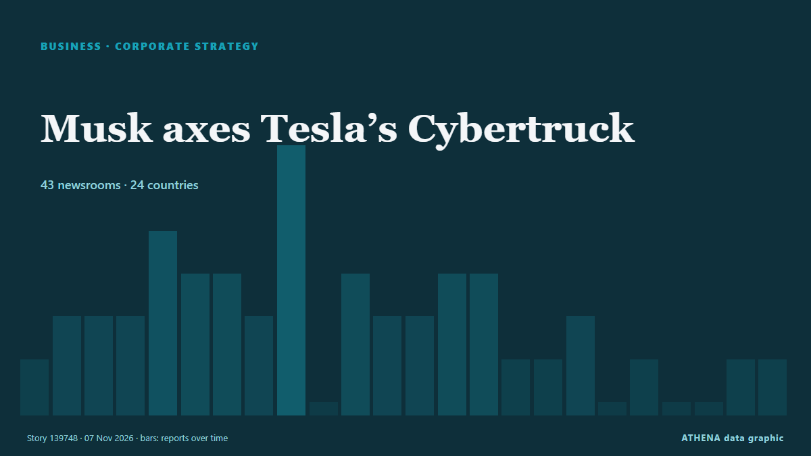

Stratégie d'entreprise
SponsoriséPrésenté par  Cybernetics and Artificial Intelligence Lab Welcome to the Cybernetics and Artificial Intelligence Laboratory, established at the Department of Business Administration of the National and Kapodistrian University of Athens. The lab is headed by Professor Dimitrios Thomakos. The lab aims to do research that can be published in top venues. Our research uses tools and methods of Artificial Intelligence, and lies in the following areas: - Forecasting - Decision making - Cyber security - Finance We are always looking forward to collaborating with exceptional students!
Cybernetics and Artificial Intelligence Lab Welcome to the Cybernetics and Artificial Intelligence Laboratory, established at the Department of Business Administration of the National and Kapodistrian University of Athens. The lab is headed by Professor Dimitrios Thomakos. The lab aims to do research that can be published in top venues. Our research uses tools and methods of Artificial Intelligence, and lies in the following areas: - Forecasting - Decision making - Cyber security - Finance We are always looking forward to collaborating with exceptional students!
| 25 oct. | 0 |
|---|---|
| 26 oct. | 0 |
| 27 oct. | 0 |
| 28 oct. | 0 |
| 29 oct. | 1 |
| 30 oct. | 0 |
| 31 oct. | 0 |
| 1 nov. | 1 |
| 2 nov. | 1 |
| 3 nov. | 6 |
| 4 nov. | 5 |
| 5 nov. | 8 |
| 6 nov. | 2 |
| 7 nov. | 0 |
Les titres sont affichés en anglais, tels que publiés.

Musk axes Tesla’s Cybertruck
Its CEO Elon Musk says this allows the automaker to accommodate increased output of its new Cybercab. de The Business Times
Beef Giant JBS Faces Laundering Complaints
Campaigners filed 14 complaints in four European countries accusing JBS of laundering money tied to Amazon deforestation, which the company rejects. de The Rio Times
Lehmann Marine Converts Danube Passenger Vessel to Fully Electric
Lehmann Marine, a Sunlight Group company, has converted the MS SISSI passenger ship to fully electric from traditional diesel in collaboration with operator Donauschifffahrt Wurm & Noé and OSWAG… de MarineLink
Ocean the star as Maersk reports Q3 bump in revenue, but drop in volume
Maersk experienced a 27% year-on-year bump in its third-quarter revenues, hitting $18.1bn, buoyed by a sharp rise in container freight rates that more than offset a slight dip in volumes, prompting… de The Loadstar
Armani heirs have no plans to sell fashion house to major companies — Reuters
The heirs intend to distribute a minority stake among several investors, thereby preventing the emergence of a dominant shareholder. de TASS (English)
3M settles 'forever chemical' personal injury claims for $7B
Manufacturing giant 3M has agreed to a $7.35 billion settlement over personal injury claims related to its manufacture of “forever chemicals” used in firefighting foam. de The Hill
Nippon Steel raises FY26 profit forecast by 52% on robust US Steel earnings
Parent company Nippon Steel increased its U.S. subsidiary’s full-year profit guidance for the third time this year. de Manufacturing Dive
CVS Health to split pharmacy chain from health insurance
CVS Pharmacy will be separate from CVS Health, housing major insurer Aetna and benefits manager Caremark CVS Health, the largest US healthcare conglomerate valued at $117bn, has announced its plans… de The Guardian
Schneider to shift eastern rail business to Norfolk Southern from CSX
Schneider National will make Norfolk Southern its primary eastern rail provider as the railroad pursues a merger with Union Pacific. de FreightWaves
Toyota posts profit surge and lifts annual outlook as hybrid sales shine
Toyota on Thursday booked its first profit gain in six quarters and lifted its annual outlook by 15%, as a weaker yen and robust demand for higher-margin hybrid vehicles offset a slide in sales in… de Tuoi Tre News
bp raises $1bn through Aker BP share sale
bp has sold a 5% stake in Norwegian oil and gas producer Aker BP for $33.4 per share, generating gross proceeds of about Nkr9.83bn ($1.06bn). de Offshore Technology
Sony Q2 profit jumps on 'Spider-Man' and PlayStation boost
Blockbuster “Spider-Man: Brand New Day” delivered a major boost to Sony’s September quarterly earnings on the top and bottom lines. de Variety
AD Ports Group appoints Dr Afif Saif Al Yafei as Group Chief Executive Officer
AD Ports Group , a leading global enabler of integrated trade, industry and logistics solutions, announced the appointment of Dr. de Cyprus Shipping News
Arm beats second-quarter revenue estimates on AI and data-center demand
It expects to sell US$2 billion worth of its CPU, the AGI CPU, in fiscal 2027 and 2028. de The Business Times
GXO reports stronger growth as logistics contract wins accelerate
GXO Logistics reported higher revenue and net income for the third quarter of 2026, supported by stronger organic growth and an increase in new business contracts. de Container News
Canva announces layoffs, job changes for about 22% of workforce
The revamp leaves the company in a delicate financial balance. de The Business Times
Piraeus Port Authority nine-month profit falls 21.5%
Piraeus, Greece (Ports Europe) November 4, 2026 – Piraeus Port Authority (PPA) reported a 21.5% fall in nine-month profit to €59.7 million, but container throughput at Pier I grew in the third… de Ports Europe
Aramco acquires 49% stake in Saudi Arabia's Humain
RIYADH: Saudi Aramco has completed its acquisition of a 49 percent stake in artificial intelligence company Humain, formalising an agreement first announced in October 2025, in a transaction… de Arab News
German automaker giant BMW's operating profit falls to lowest level since 2020
Munich-based automaker's operating profit falls by 35.2% in 1st 9 months of 2026. de Anadolu Agency (English)